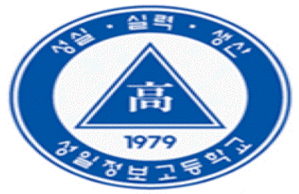
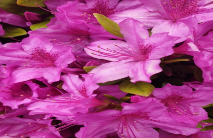
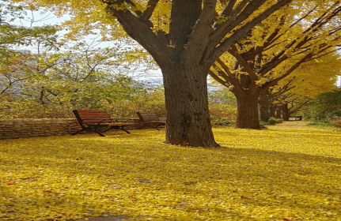
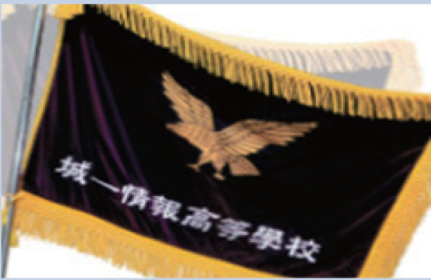

학교 상징
교 훈
성실한 사람, 실력 있는 사람, 생산적인 사람
■ 로 고
로고의 바탕인 방패는 국난 극복의 역사를 간직한 남한산성과 성남의 도시적 이미지를
형상화한 것으로, 어떤 고난과 역경도 굴하지 않고 이겨내는 불굴의 의지를 상징한다.
방패 윗부분의 삼색띠는 색의 삼원색(빨강, 노랑, 파랑)을 이용한 성실한 사람(노랑, 흰색),
실력있는 사람(파랑), 생산적인 사람(빨강)의 교훈을 의미한다.
빨강, 노랑, 파랑색은 다음과 같은 의미를 지닌다. 노랑, 흰색 : 진리 순정을 의미함. 파랑 :
정의, 평등, 공정을 의미함. 빨강 : 애국, 열정, 헌신을 의미함.
■ 교 표

교표안의 원은 우주와 젊은이들이 뻗어나갈 넓은 세상이 모든 것에 막힘없이 통한다는 의미이며,
삼각형은 성남의 상징인 남한산을 형상화하였으며 이는 가장 안정된 구도로서 정상을 향하고 있어
안정된 교육환경에서 제일의 교육을 구현하겠다는 의지를 담고 있다.
■ 교 화

철쭉
젊은이의 용기와 사랑 "사랑의 기쁨"이라는 꽃말을 지닌 철쭉은 우리나라 야산의 어느 곳에서나 흔히
자라는 꽃으로, 꽃은 5월에 피고 진분홍색이며 3~7개씩 가지 끝에 모여 핀다. 꽃이 크고 잎과 함께
피는 것이 진달래와 다르다.
■ 교 목

은행
용기, 진취적인 기상, 풍요로운 결실 곧게 뻗어 나가는 가지와 푸른 잎에서 젊은이의 용기와 진취적인
기상을, 대기오염, 병충해 등 환경에 대한 적응력과 강한 생명력으로 맺은 희고 작은 열매 은행(銀杏)
에서 결실의 풍요로움을 성일인의 상징으로 삼았다.
■ 교 조
독수리
젊은이의 도전정신, 기상 하늘을 향해 높이 떠오르는 모습에서 성일인의 도전정신을 나타내며, 매섭고
날카로와서 멀리까지 내다볼 수 있는 독수리의 눈은 성일인의 원대한 이상과 미래 지향적이며 진취적인
기상을 나타낸다.
■ 교 기

지성과 진리탐구, 성일인의 기개와 기상 번쩍이는 눈매와 굳게 다문 부리, 튼튼한 발톱과 역동적인 날개가
인상적인 황금빛 독수리가 그 특징이다. 교기의 군청색 바탕은 지성과 진리탐구를, 둘레의 황금색 수실은
성일인이 온누리에 펼쳐 나갈 기개를 나타낸다. 저 창공을 향해 웅지의 날개를 펴고 미래 사회의 주역이
될 자랑스러운 성일인의 기상을 잘 드러낸다.